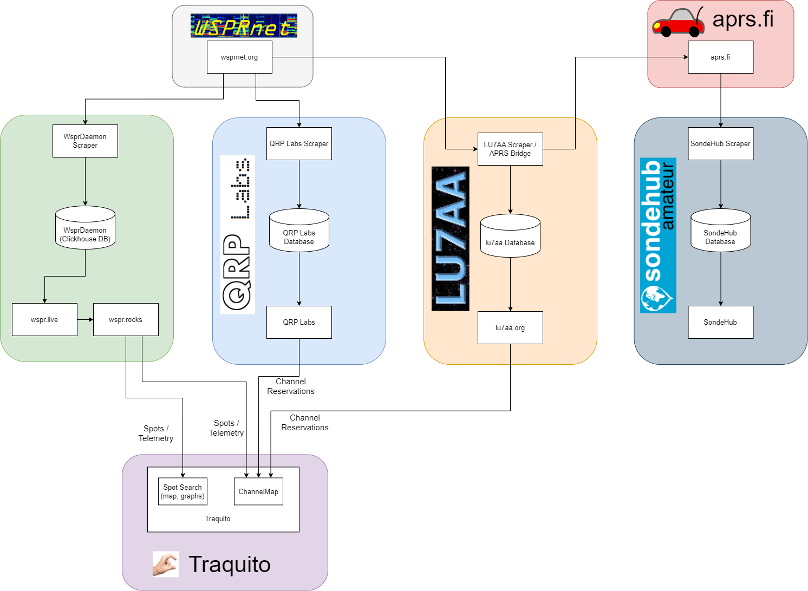

WSPR Site Relationships
There are a number of different websites that have WSPR data presented on them.
The diagram below clarifies the flow of information from the root database of all WSPR data (wsprnet), to how it is presented on some of those sites, and the relationships between the sites.
The Traquito website uses data in two ways:
- ChannelMap looks for channel researvations from qrp-labs and lu7aa, and overlays observed spots from wspr.rocks
- Spot Search (maps, graphs, data table) uses data from wspr.rocks
The image below is best effort (ie not a comprehensive nor authoritative list).
Click to enlarge.

Links to the sites: